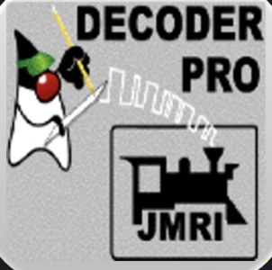
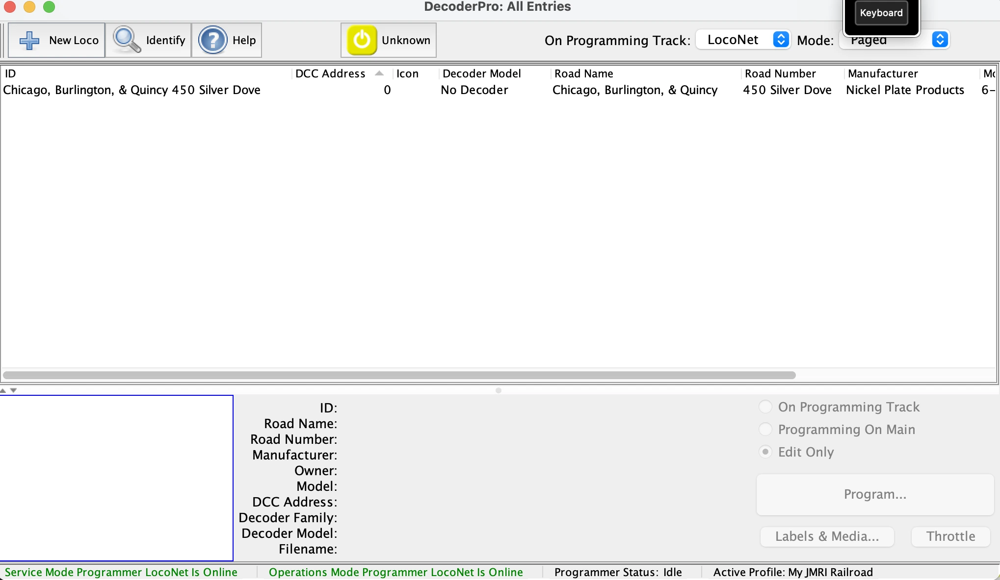

This tutorial assumes that you already have DecoderPro installed and configured. As this differs depending upon which Digital Command Control system, interface, and computer operating system you are using, and because there is already documentation explaining that. You can find that documentation on the JMRI website, https://www.jmri.org/.

